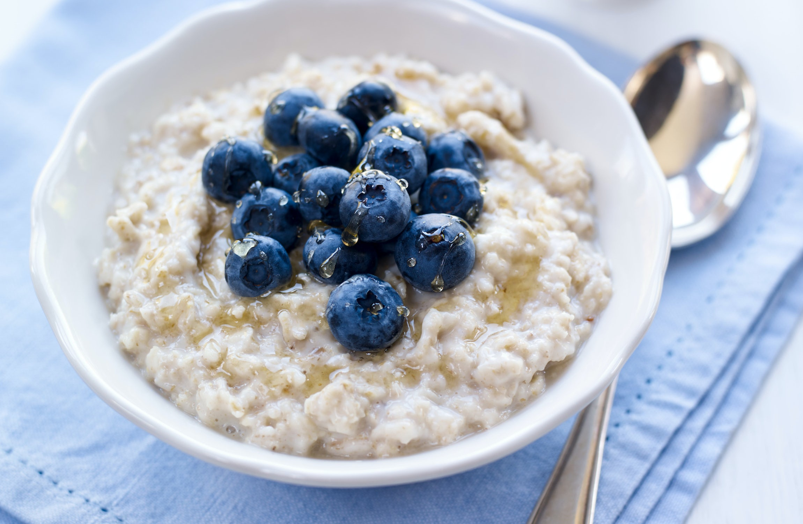

Porridge With Berries
home

Description
Here you have a simple bowl of oats and blueberries and honey syrup on top.
If your noggin is jogging, then setup your microwave!
Ingredients
- 40g of the finest Scottish oats
- 300ml of soya milk
- A drizzle of honey syrup
- A handful of blueberries and any other berries I suppose
Steps
- Put 40g of oats into a bowl, and 300ml of soya milk
- Place the bowl in the microwave, heat for 3 minutes 30 seconds
- Season the berries and honey syrup on top of the porridge and enjoy